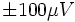
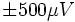
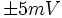
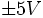
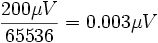
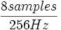

gMOBIlabADC
User Reference
Contents |
Function
The gMOBIlabADC acquires data from a g.MOBIlab device. g.MOBIlab is an amplifier/digitizer combination from g.tec medical engineering GmbH/Guger Technologies OEG (http://www.gtec.at).
g.MOBIlab Hardware
The MOBIlab device supports 8 analog input channels digitized at 16 bit resolution and sampled at a fixed 256 Hz sampling rate. In its standard configuration, channels 1-2 have a sensitivity of , channels 3-4 have a sensitivity of , channels 5-6 have a sensitivity of , and channels 7-8 have a sensitivity of . The input range of the A/D converter is approximately equal to this sensitivity and thus, for example, one LSB for channel 1 or 2 is roughly . However, the actual input range of the A/D converter is slightly larger than the sensitivity of each channel (so that the A/D converter can detect when the amp saturates), and thus, exact LSB values have to be determined for each channel using a calibration signal.
This device only has one A/D converter and thus samples are digitized at slightly different times. BCI2000 has a feature that can align samples in time (parameter AlignChannels, which needs to be turned on (i.e., AlignChannels needs to be 1).
An additional feature of the MOBIlab is 2 digital input/output lines. The MOBIlab source module is configured such that channel 9 corresponds to the value of the digital lines, which are configured as input lines.
Parameters
COMport
Serial port of the attached MOBIlab device, e.g., COM2:
SampleBlockSize
Samples per digitized block. A value of 8 corresponds to a BCI2000 system rate of 32 Hz ().
SamplingRate
The sampling rate of the MOBIlab. This value has to be 256.
SourceCh
The total number of channels. This number can be 1 to 9. If it is set to 9, then channels 1-8 represent 8 analog input channels, and channel 9 represents the values of the two digital lines.
States
None.
See also
User Reference:DataIOFilter, Programming Reference:GenericADC Class
![[BCI2000 Help]](../../images/bci2000logo_small.png)